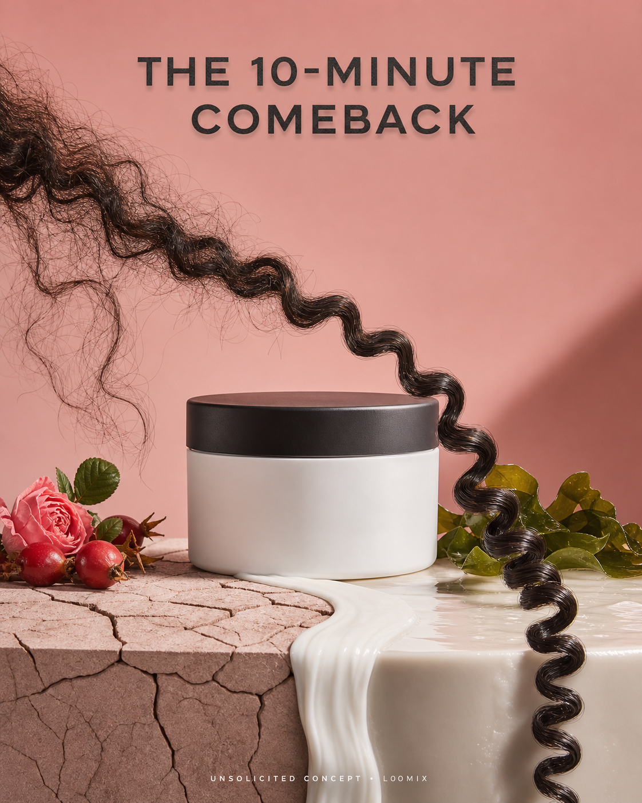

Concept created by LoomixUnsolicited concept
BriogeoReels + TikTok9:168 seconds
Don’t Despair, Repair! — The 10-Minute Comeback
A single curl travels from a dry, cracked landscape through a ribbon of rich conditioning cream, emerging defined, springy, and visibly glossy on the other side.
Create the full adOpen product pageAI-generated visual direction

Concept art for discussion only. Product and brand belong to Briogeo.
Hooks
The 10-minute comeback.Cross over to curl repair.From stressed to springy.
Six-shot storyboard
- Open on one frizzy curl over cracked texture.
- Reveal the mask jar at the divide.
- Pour a cream ribbon across the gap.
- Let the curl travel through the treatment.
- Reveal definition, bounce, and shine.
- End on jar, transformed curl, hook, and CTA.
Caption
A tactile repair journey that turns the mask’s 10-minute benefit into one instantly readable transition.
LoomixLoomix turns one product photo into a storyboard, short video direction, captions, and ready-to-post ad copy.